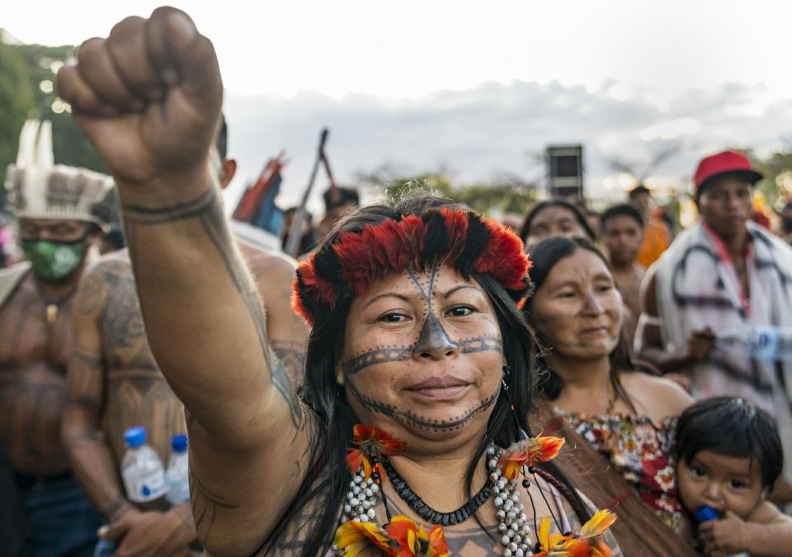

Resistência Viva: O Povo Munduruku
Concentrados nas margens do Rio Tapajós, no Pará, os Munduruku somam uma população de mais de
14
mil pessoas. Historicamente conhecidos como um povo guerreiro, seu nome carrega um
significado
forte: formigas vermelhas
, uma referência à forma unida e implacável com que
enfrentavam seus
oponentes no passado.
Hoje, essa união é a principal arma contra o crime ambiental. Alvos constantes de invasões criminosas que destroem seus rios e florestas em busca de ouro, os Munduruku transformaram a tradição guerreira em um movimento incansável de defesa territorial.
- Autodemarcação: Diante da lentidão do Estado, os próprios guerreiros e guerreiras Munduruku realizam expedições na floresta para vigiar e sinalizar os limites de suas terras.
- Protagonismo Feminino: As mulheres Munduruku exercem papel central na linha de frente dos protestos e das decisões políticas. Elas lideram assembleias e articulam denúncias nacionais e internacionais.
- Coletivo Ipereg Ayu: Movimento criado para unificar a resistência, combater grandes projetos de infraestrutura (como hidrelétricas) e expulsar invasores das terras demarcadas.
- Uso da Tecnologia: Jovens Munduruku utilizam drones, câmeras e redes sociais para documentar e anunciar os acampamentos de garimpo à Polícia Federal e aos órgãos ambientais.